Helping financially inexperienced users understand diversification and concentration risk — without giving financial advice.
Dec 2025 · UX and UI design
01
Overview
Context
As a frequent user of Trading 212, I noticed that while the app provides a lot of data, it doesn’t always help users understand how healthy their portfolio is or what to do next.
This was a self-initiated design exercise exploring how a self-directed trading app could help users understand portfolio risk without providing financial advice.
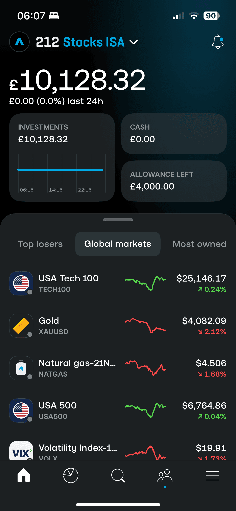
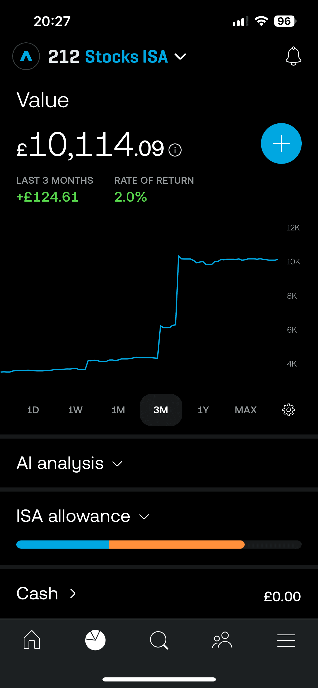
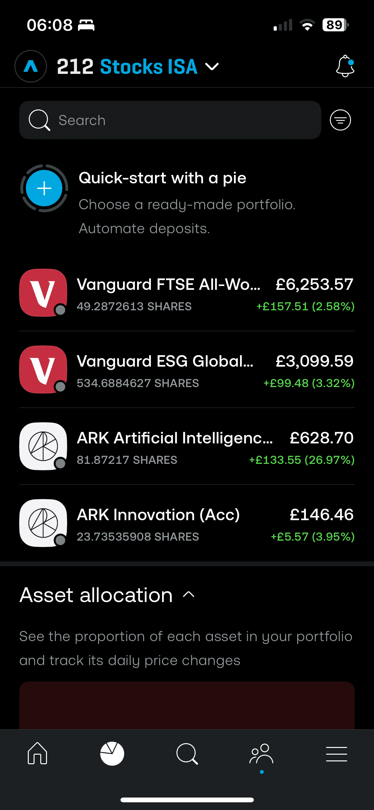
02
Framing
Key problems
Portfolio health isn’t obviousPerformance metrics don’t reveal true gains, losses, or overall health.
Risk lacks visibilityAbstract numbers hide concentration and real exposure.
Action signals are unclearFragmented views make it hard to know whether to act or wait.
Hypotheses
If users understand risk concentration, they will trade less reactively
If the system shows status instead of raw metrics, users feel more confident
Design Principles
Non-advisory by default
Explain before act
Relative signals, not absolute judgement
User remains in control
Defining success upfront
User outcomesClear understanding · Confidence without pressure · Action clarity
A single, opinionated portfolio health viewAggregates performance, risk, and allocation into a clear health status — not just charts.
Risk framed through exposure, not raw percentagesVisualises concentration and downside impact so users understand what they’re actually exposed to — and why it matters.
Clear signals with explicit “do nothing” as a valid outcomeProvides consistent cues that clarify when action is needed — and when staying put is the right choice.
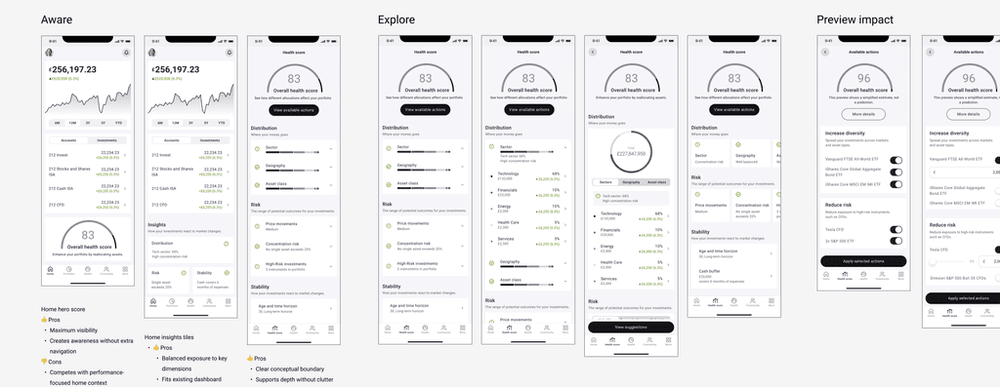
Explored the information architecture and layouts to make it consistent and scalable.
03
ConceptA—Holistic,unifiedportfolioview
A consolidated health perspective across accounts
Home
The home screen balances emotional reassurance with rational signals, ensuring users feel grounded before engaging with risk-related insights.
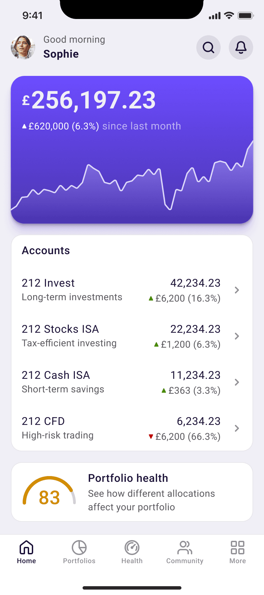
Total portfolio overviewAnchors users with a clear total value, while providing light performance context without encouraging reactive behaviour.
Accounts overviewClarifies where funds are held, grounding portfolio changes in familiar account structures before introducing higher-level health signals.
Portfolio healthCondenses diversification and risk into a simple signal that invites exploration.
Health overview
The Portfolio Health page is designed to translate complexity into understanding, surfacing risks, balance, and resilience in a way that informs users without telling them what to do.
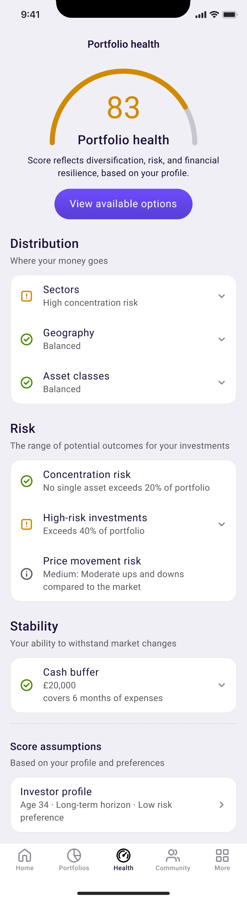
Portfolio health overviewThe Portfolio Health score provides a high-level quality signal based on aggregated holdings and the user’s profile, with optional deeper exploration.
Structured decompositionDistribution, Risk, and Stability break the score into clear dimensions, helping users understand what’s driving it. Together, they turn an abstract metric into explainable signals without overwhelming detail.
Visual cues for user empowerment
Indicators enable fast scanning, with deeper explanations and charts revealed progressively as users choose to explore.
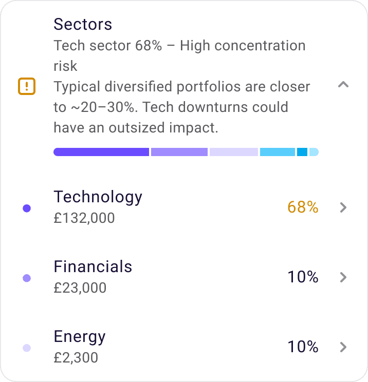
Score assumptionsThe score reflects user-specific assumptions, not an absolute truth, so making them visible improves transparency and trust.
Available options
This screen turns insights into optional exploration. Users preview example actions across accounts, stay in control, and confirm trades separately.
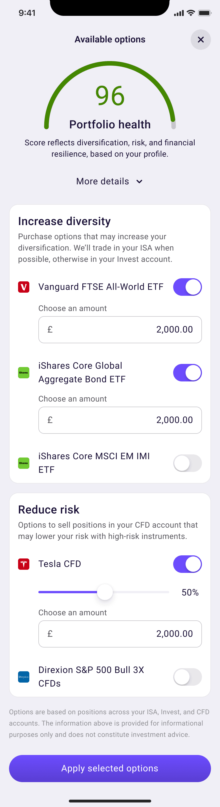
Portfolio health overviewOptions update the score in real time, while detailed breakdowns are progressively disclosed to avoid cognitive overload.
Available optionsActions are presented as reversible previews, letting users explore potential impact without committing to a trade. Final execution always happens through the standard trading confirmation flow.
DisclaimerIntentionally designed to separate insight from advice, enabling confident self-directed decisions while remaining compliant with FCA guidelines.
Confirmation
The confirmation page acts as a deliberate pause, helping users review their decisions and understand impact before committing to execution.
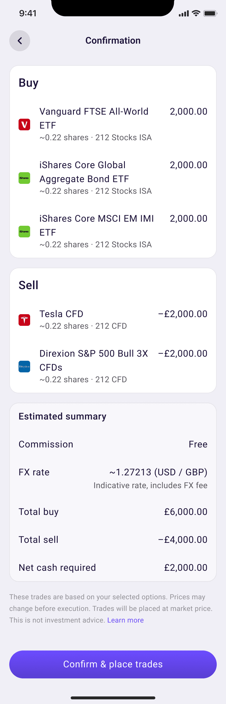
Main actionsThis section clearly lists the trades that will be executed, allowing users to verify buy and sell actions before confirming.
Financial impactThis section summarises the resulting cash movement, FX conversion, and fees, making the financial outcome explicit before execution.
Completion
This screen acknowledges completion by shifting focus from execution to outcome. Instead of emphasising individual trades, it reinforces that the portfolio state has been updated, helping users feel closure and confidence before moving on.
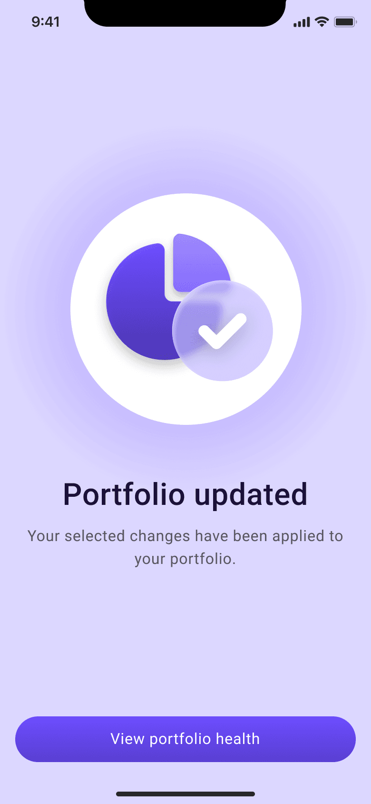
IllustrationA neutral illustration provides immediate confirmation and a calm sense of completion, without implying investment outcomes.
End of storyCloses the flow by returning users to portfolio health, where they can review the impact of their changes.
04
ConceptB—Embeddedportfoliohealth(chosen)
Balancing product ambition with structural constraints
Quick wins
From a real product perspective, I’d recommend placing portfolio health within the existing portfolio overview to minimise structural changes, align with users’ expectations, and enable incremental rollout.
This approach focuses on per-account health rather than a consolidated view across ISA, Invest, and CFD, while still creating a clear feedback loop after rebalancing or trading.
This also leaves room for a future consolidated view, once user understanding and internal data maturity improve.
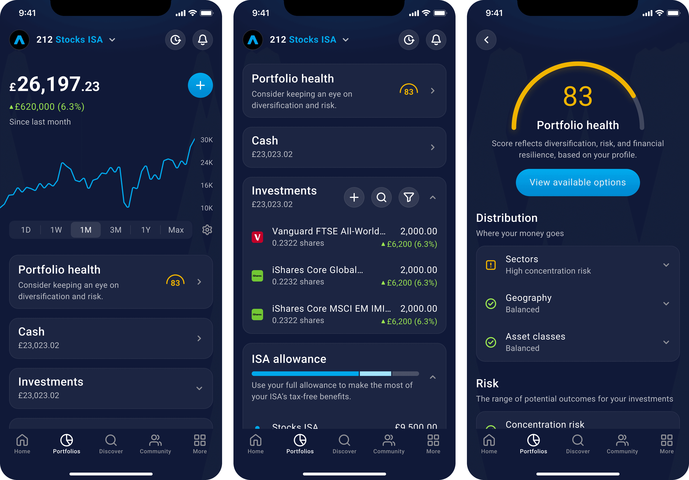
Micro-interactions & motion prototyping
Built interactive prototypes in Framer to make abstract portfolio health concepts tangible.
Motion, state changes, and progressive disclosure were used to guide attention, reinforce cause-and-effect (exposure → impact → options), and reduce cognitive load — without implying recommendations.
Deliverables
Scalable UI foundation for a regulated investment product
A reusable component library defining layout, typography, colour, and risk indicators, designed to support consistency, accessibility, and regulatory-safe communication across the product.
05
Reflection
Next step
This prototype explores a direction rather than a final solution.
It establishes a clear, non-advisory foundation, with future iterations guided by user behaviour, data validation, and regulatory constraints, focusing on validating assumptions before expanding the system.